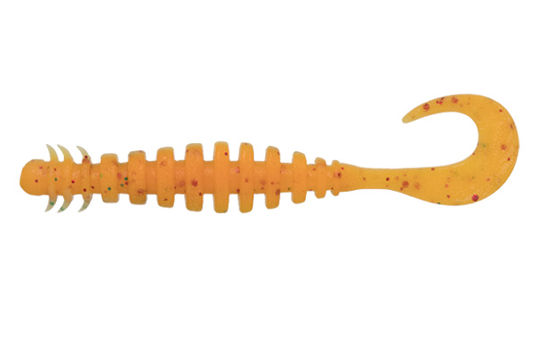
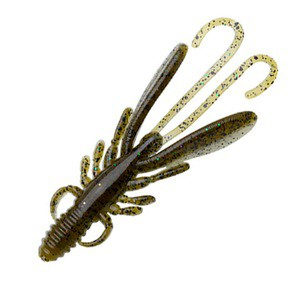

ロックフィッシュゲームの魅力
この釣りの魅力は狙える魚種の豊富さです。具体的に狙える魚は
「アイナメ」「ソイ」「メバル」「カジカ」「カサゴ」などが狙えます。
九州などの暖かい地域では「ハタ」などの高級魚なども狙うことができます。基本的に一年を通して魚を
釣ることができ、北海道では大型の魚を沢山釣ることができます。そして、もう一つの魅力は釣る場所の
景色です。朝早くから釣りをすることも多いロックフィッシュゲームは
朝日や夕焼けを見ることができます。この景色はとても綺麗で、とても癒されます。
大自然と触れ合いながら釣りを楽しむのも一つの大きな魅力です。
ロックフィッシュの釣り方
ロックフィッシュの釣り方を知るにはまずロックフィッシュの生態を知る必要があります。ロックフィッシュという
名前の通り、岩場を好む魚です。岩場だけでなく海藻の多い所にも多く生息しています。しかし、岩場というと荒々しい
磯場などを想像するかもしれません。実際、磯には大型の個体がいることも多いです。しかし、足場が不安定だったり
滑落の危性険が伴うのも事実です。そこで最近注目されているのは漁港です。アクセスすることが
簡単で比較的安全に釣りを楽しむことができます。さらに、家族で釣りを楽しむ方はとても良い場所と言えます。
漁港でロックフィッシュをするにあたって一番大切になってくるのは、海藻や岩場などの地形変化を見つけ出すことです。
これを可能にすれば誰でも簡単にロックフィッシュを釣ることができます。
ワームの種類
ロックフィッシュを釣るにあたって一番大切であるワームについて紹介します
ワームには、大きく分けて二種類あります。一つ目は小魚に似せたワーム、二つ目は
エビやカニに似せた甲殻類系ワームです。さらにここから細かく分けると
小魚系ワームが三種類、甲殻類系ワームが二種類に分けることができます。


引用先 https://ecogear.jp/ecogear/ring_max_power_ocean/ https://ecogear.jp/ecogear/bug_ants/